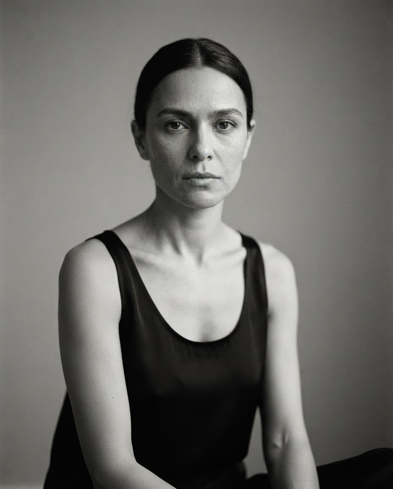
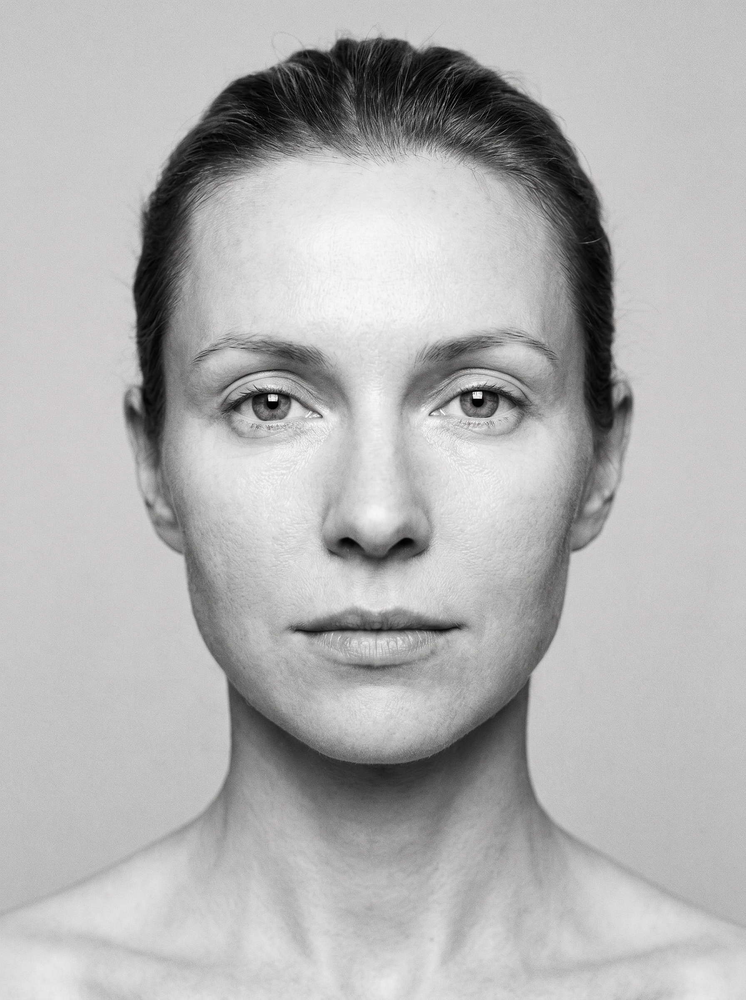
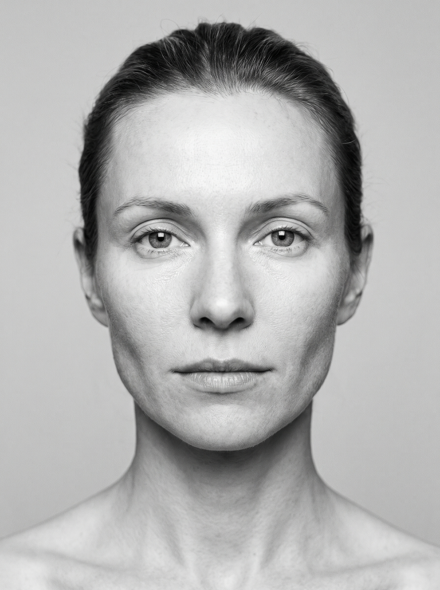

Seu rosto muda de um dia para o outro por um motivo simples, e reversível. Um ritual de 7 minutos para acordar com o rosto mais leve, definido e descansado.
Fig. 01 o ritual de 7 minutos
Você bebe mais água. Corta um pouco disso, um pouco daquilo. Se olha no espelho de manhã e não se reconhece. À noite, o rosto parece outro, mais fino, mais definido.
Não é a balança. Na maioria dos dias, o que muda o seu rosto não é gordura, é retenção temporária de líquido. Deitada, a drenagem do rosto trabalha mais devagar; sódio, álcool, sono ruim e a posição de dormir empurram líquido para bochechas, olhos e mandíbula.
A boa notícia dessa má notícia: retenção você resolve em minutos, não em meses.

Fig. 02 o mesmo rosto ao longo do dia
O inchaço facial é um dos raros “problemas de beleza” cujo resultado é real, imediato e reversível. Por isso o antes e depois aqui pode ser honesto, e você mesma reproduz em casa.


Fig. 03 mesma pessoa, mesma luz
Descubra em 60 segundos por que o seu rosto incha, e qual protocolo combina com a sua rotina.